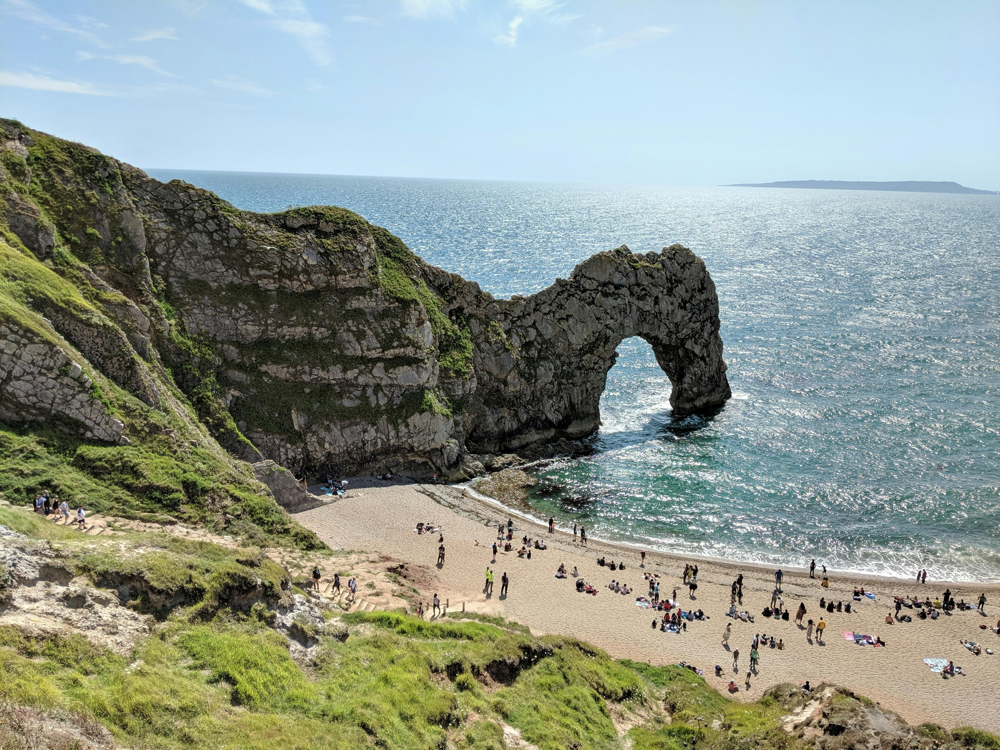

Costa de Dorset
Localizada no sudoeste da Inglaterra, a costa do condado de Dorset abriga algumas das paisagens litorâneas mais impressionantes e historicamente ricas da Europa. Conhecida mundialmente como parte da Jurassic Coast (Costa do Jurássico), essa região estende-se por quilômetros de falésias imponentes, praias de seixos dourados e formações geológicas que contam a história da Terra ao longo de 185 milhões de anos.
O grande destaque da região é, sem dúvida, a praia de Durdle Door. Famosa por seu majestoso arco natural de pedra calcária que avança sobre o mar, ela atrai fotógrafos, trilheiros e viajantes do mundo todo. A água cristalina (embora fria, típica do Canal da Mancha) contrasta perfeitamente com os tons claros dos penhascos ao fundo, criando um cenário cinematográfico.